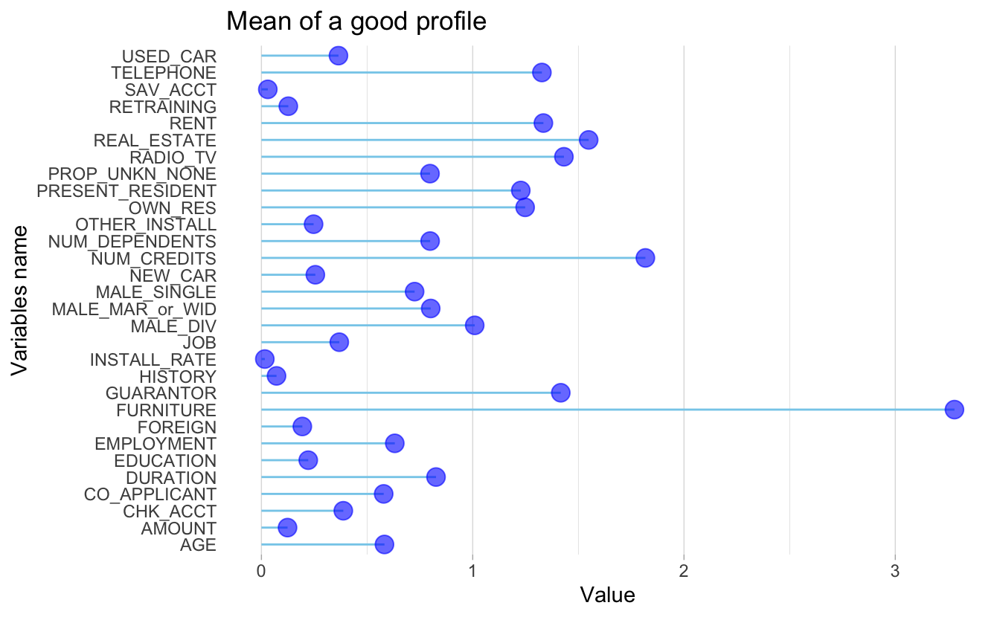
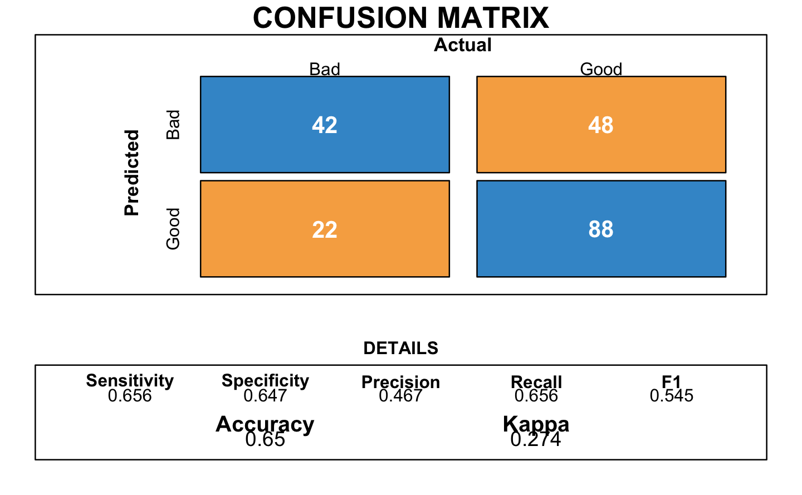
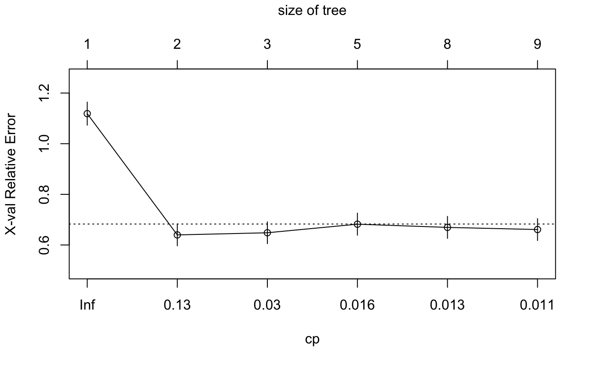
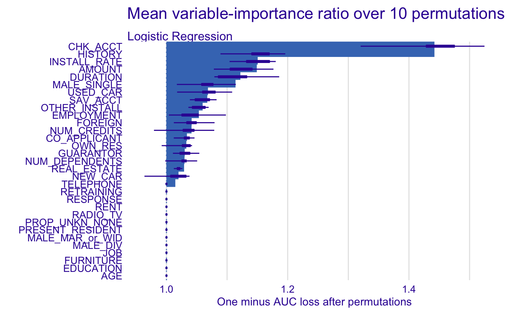
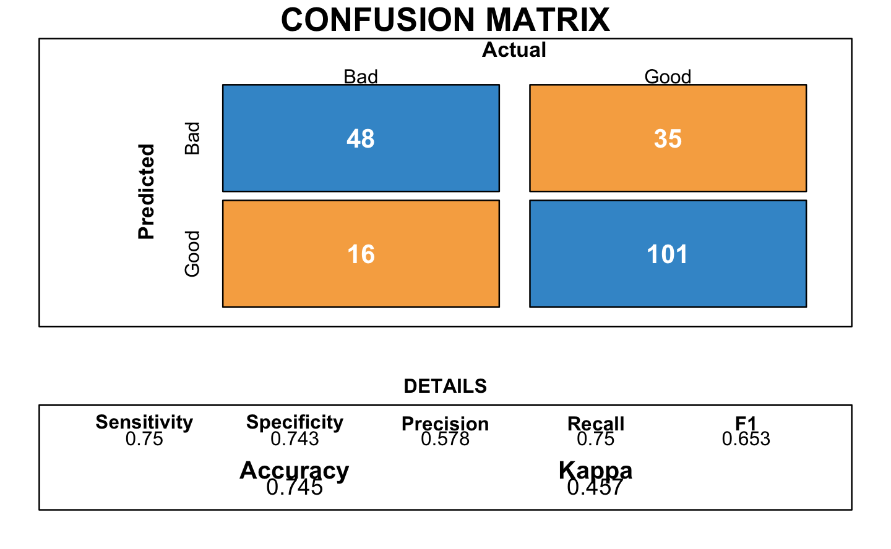
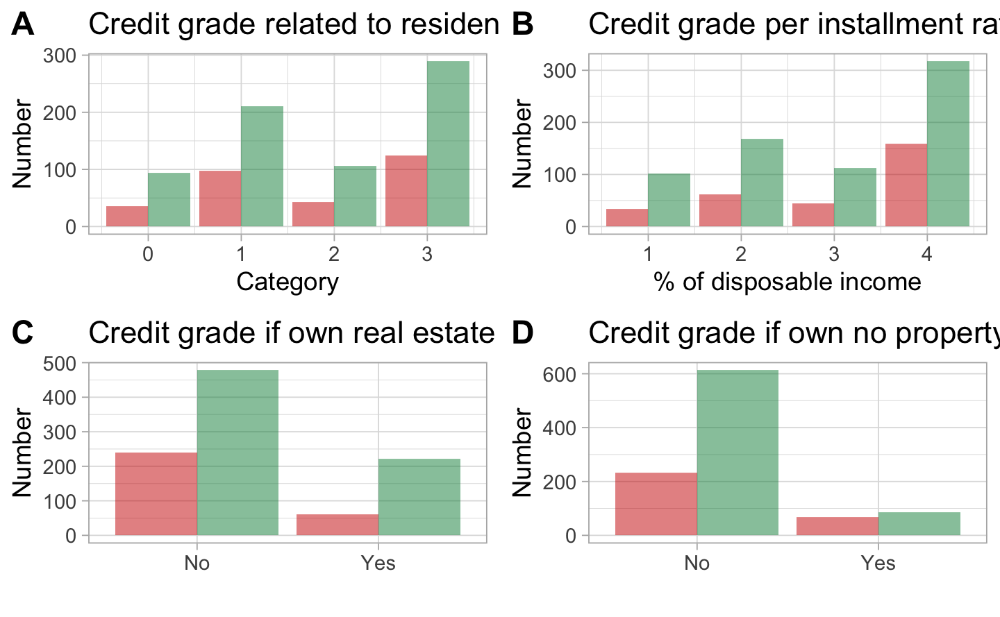
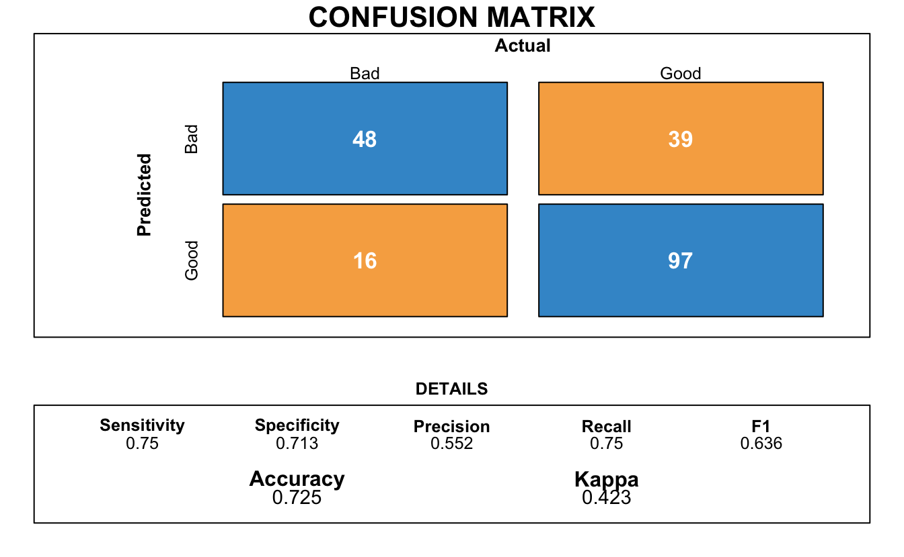
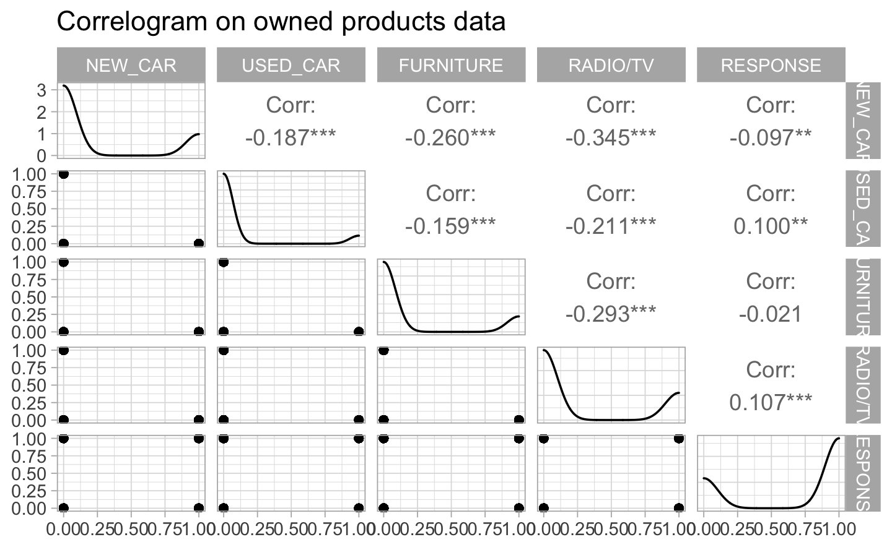
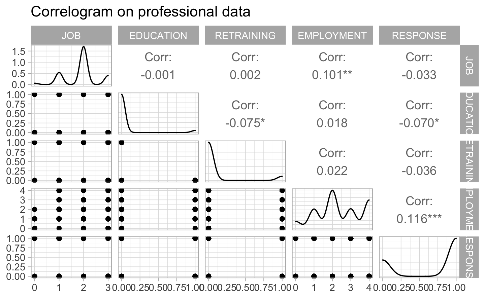
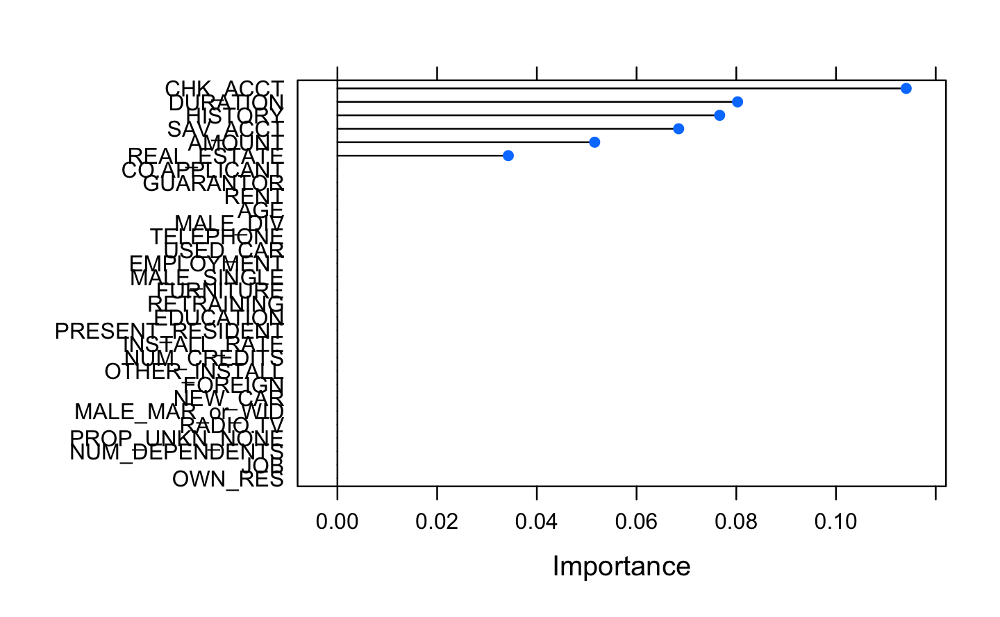

Chapter 2 Data understanding and preparation
2.1 Data understanding
To create a model that will predict whether a client application represents a risk or not, we work on a dataset from our client containing data on 1000 past credit applicants, described by the following variables:
CHK_ACCT: The checking account status of the applicant in deutsche Mark (DM).
DURATION: The duration of the credit in months.
HISTORY: The credit history of the applicant.
NEW_CAR: Purpose of the credit.
USED_CAR: Purpose of the credit.
FURNITURE: Purpose of the credit.
RADIO/TV: Purpose of the credit.
EDUCATION: Purpose of the credit.
RETRAINING: Purpose of the credit.
AMOUNT: The credit amount.
SAV_ACCT: The average balance in savings account in deutsche Mark (DM).
EMPLOYMENT: If the applicant is employed and since how long.
INSTALL_RATE: The installment rate as percentage of disposable income.
MALE_DIV: If the applicant is male and divorced.
MALE_SINGLE: If the applicant is male and single.
MALE_MAR_or_WID: If the applicant is male, married or widowed.
CO-APPLICANT: If the applicant has a co-applicant.
GUARANTOR: If the applicant has a guarantor.
PRESENT_RESIDENT: If the applicant is a resident and since how many years.
REAL_ESTATE: If the applicant owns real estate.
PROP-UNKN-NONE: If the applicant owns no property (or unknown).
AGE: Age of the applicant in years.
OTHER_INSTALL: If the applicant has other installment plan credit.
RENT: If the applicant rents.
OWN_RES: If the applicant owns residence.
NUM_CREDITS: Number of existing credits of the applicant at our client bank.
JOB: The nature of the applicant’s job.
NUM_DEPENDENT: Number of people for whom liable to provide maintenance.
TELEPHONE: If the applicant has a phone in his or her name.
FOREIGN: If the applicant is a foreign worker.
By exploring the data, we find some inaccuracies and in agreement with the customer, we change them as follow:
- One observation of the column “Age”: 75 instead of 125 years old.
- One observation of the column “Education”: 1 instead of -1.
- One observation of the column “Guarantor”: 1 instead of 2.
- Code the categories of the column “Present_resid”: 0 to 3 instead of 1 to 4
2.2 Exploratory Data Analysis
The German Credit data is heavily unbalanced: 700 credit applications rated as good versus 300 credit applications rated as bad.


What does the first category means? <0, meaning 0? So the account is opened but there is nothing on it? Another point, if you don’t have any checking account, your credit applications has more probability to be rated as good?
Here again, seems weird. At 3 and 4, it means the previous credit were not or partially reimbursed. But they are graded as good?


Some questions need to be asked. What’s the difference between an application with a small saving accounts and one with none saving accounts? Why the bank gives good grades to the latest?

#> $`1`
#>
#> $`2`
#>
#> attr(,"class")
#> [1] "list" "ggarrange"





The following plot shows a selection of the most important variables of our dataframe. The two main disadvantages of these methods are: The increasing overfitting risk when the number of observations is insufficient. The significant computation time when the number of variables is large.
#> Warning in train.default(x, y, weights = w, ...): You are trying to
#> do regression and your outcome only has two possible values Are you
#> trying to do classification? If so, use a 2 level factor as your
#> outcome column.
#> Warning in nominalTrainWorkflow(x = x, y = y, wts = weights, info
#> = trainInfo, : There were missing values in resampled performance
#> measures.
#> rpart variable importance
#>
#> only 20 most important variables shown (out of 30)
#>
#> Overall
#> CHK_ACCT 0.1141
#> DURATION 0.0803
#> HISTORY 0.0767
#> SAV_ACCT 0.0684
#> AMOUNT 0.0516
#> REAL_ESTATE 0.0343
#> PROP_UNKN_NONE 0.0000
#> RETRAINING 0.0000
#> TELEPHONE 0.0000
#> GUARANTOR 0.0000
#> MALE_DIV 0.0000
#> OTHER_INSTALL 0.0000
#> PRESENT_RESIDENT 0.0000
#> FURNITURE 0.0000
#> NUM_CREDITS 0.0000
#> FOREIGN 0.0000
#> MALE_SINGLE 0.0000
#> AGE 0.0000
#> NUM_DEPENDENTS 0.0000
#> OWN_RES 0.0000
2.3 Exploratory Data Analysis
The German Credit data is heavily unbalanced: 700 credit applications rated as good versus 300 credit applications rated as bad.


What does the first category means? <0, meaning 0? So the account is opened but there is nothing on it? Another point, if you don’t have any checking account, your credit applications has more probability to be rated as good?
Here again, seems weird. At 3 and 4, it means the previous credit were not or partially reimbursed. But they are graded as good?


Some questions need to be asked. What’s the difference between an application with a small saving accounts and one with none saving accounts? Why the bank gives good grades to the latest?

#> $`1`
#>
#> $`2`
#>
#> attr(,"class")
#> [1] "list" "ggarrange"


The following plot shows a selection of the most important variables of our dataframe. The two main disadvantages of these methods are: The increasing overfitting risk when the number of observations is insufficient. The significant computation time when the number of variables is large.
#> Warning in train.default(x, y, weights = w, ...): You are trying to
#> do regression and your outcome only has two possible values Are you
#> trying to do classification? If so, use a 2 level factor as your
#> outcome column.
#> Warning in nominalTrainWorkflow(x = x, y = y, wts = weights, info
#> = trainInfo, : There were missing values in resampled performance
#> measures.
#> rpart variable importance
#>
#> only 20 most important variables shown (out of 30)
#>
#> Overall
#> CHK_ACCT 0.1141
#> DURATION 0.0803
#> HISTORY 0.0767
#> SAV_ACCT 0.0684
#> AMOUNT 0.0516
#> REAL_ESTATE 0.0343
#> NUM_DEPENDENTS 0.0000
#> NEW_CAR 0.0000
#> FURNITURE 0.0000
#> USED_CAR 0.0000
#> FOREIGN 0.0000
#> OWN_RES 0.0000
#> PROP_UNKN_NONE 0.0000
#> GUARANTOR 0.0000
#> JOB 0.0000
#> INSTALL_RATE 0.0000
#> EDUCATION 0.0000
#> RADIO.TV 0.0000
#> CO.APPLICANT 0.0000
#> RENT 0.0000